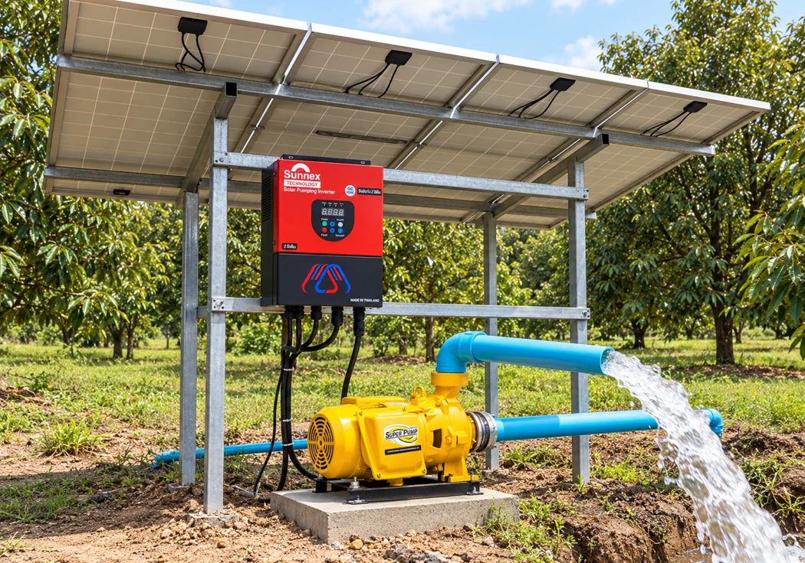
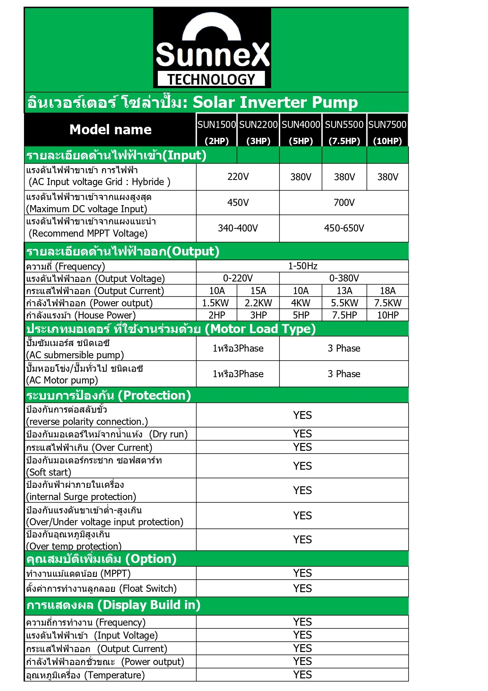

จุดเด่นของอินเวอร์เตอร์โซล่าเซลล์ Sunnex solar_power MPPT จัดการพลังงานจากแผง รองรับการติดตามจุดกำลังสูงสุดของแผง โดยปริมาณน้ำที่สูบได้ยังขึ้นกับแสงแดด ขนาดแผง และภาระปั๊ม
tune Soft start ลดการกระชาก เริ่มเดินมอเตอร์อย่างค่อยเป็นค่อยไป พร้อมช่วงความถี่ขาออก 1–50 Hz ตามข้อมูลรุ่น
water_drop ควบคุมด้วยลูกลอย รองรับการตั้งค่า Float Switch เพื่อควบคุมการทำงานตามระดับน้ำ ต้องติดตั้งและตั้งค่าให้ตรงหน้างาน
shield ระบบป้องกันการทำงาน ระบุการป้องกันน้ำแห้ง กระแสเกิน แรงดันขาเข้าต่ำ–สูง และอุณหภูมิสูงเกิน
electrical_services มีข้อมูล AC Input แยกรุ่น SUN1500–SUN2200 ระบุ AC 220V และ SUN4000–SUN7500 ระบุ AC 380V ตรวจวิธีต่อไฟก่อนใช้งาน
monitoring ติดตามค่าการทำงาน แสดงความถี่ แรงดันขาเข้า กระแสขาออก กำลังขาออกขณะทำงาน และอุณหภูมิเครื่อง

ตารางสเปค Solar Pump Inverter 2–10 แรงม้า เปรียบเทียบรุ่นจากใบข้อมูล Sunnex เพื่อเลือกแรงดันและกระแสให้สัมพันธ์กับมอเตอร์ ไม่ควรใช้แรงม้าเป็นเกณฑ์เดียว
สเปคโซล่าปั๊มอินเวอร์เตอร์ Sunnex รุ่น SUN รายการ SUN1500 SUN2200 SUN4000 SUN5500 SUN7500 กำลังมอเตอร์ (HP) 2 3 5 7.5 10 กำลังขาออก (kW) 1.5 2.2 4 5.5 7.5 ไฟ AC ขาเข้า (V) 220 220 380 380 380 แรงดัน DC ขาเข้าสูงสุด (V) 450 450 700 700 700 แรงดันแผงแนะนำ MPPT (V) 340–400 340–400 450–650 450–650 450–650 แรงดันขาออก (V) 0–220 0–220 0–380 0–380 0–380 กระแสขาออก (A) 10 15 10 13 18 ความถี่ขาออก (Hz) 1–50 1–50 1–50 1–50 1–50 มอเตอร์ปั๊ม AC ที่ระบุ 1 หรือ 3 เฟส 1 หรือ 3 เฟส 3 เฟส 3 เฟส 3 เฟส
ดูใบสเปคต้นฉบับ Sunnex 
อินเวอร์เตอร์ปั๊มน้ำโซลาร์เซลล์ทำหน้าที่อย่างไร? ระบบปั๊มโซล่าเซลล์เริ่มจากแผงที่เปลี่ยนพลังงานแสงอาทิตย์เป็นไฟฟ้ากระแสตรง (DC) จากนั้น Solar Pump Inverter จะแปลงเป็นไฟฟ้ากระแสสลับ (AC) และควบคุมการเดินมอเตอร์ปั๊มน้ำให้สัมพันธ์กับพลังงานที่มี จึงเป็นคนละหน้าที่กับตัวแผงผลิตไฟฟ้า
solar_power แผงผลิตไฟฟ้าจากแสงแดด ชุดแผงจ่ายพลังงานให้ระบบสูบน้ำ โดยต้องออกแบบแรงดันและกำลังให้ตรงกับอินเวอร์เตอร์ อ่านภาพรวมของ ระบบโซล่าเซลล์และพลังงานแสงอาทิตย์ ก่อนเลือกอุปกรณ์
tune อินเวอร์เตอร์จัดการพลังงาน แปลงไฟ DC เป็น AC สำหรับมอเตอร์ พร้อม MPPT และ Soft start ตามสเปครุ่น SUN เมื่อแสงเปลี่ยน กำลังที่พร้อมใช้งานและการทำงานของปั๊มอาจเปลี่ยนตาม
water_drop ปั๊มส่งน้ำไปใช้งานหรือเก็บสำรอง เลือก ปั๊มบาดาล หรือ ปั๊มหอยโข่ง ให้ตรงแหล่งน้ำและระยะส่ง การสูบเก็บใน ถังเก็บน้ำ ช่วยวางแผนใช้น้ำนอกช่วงสูบได้
ระบบสูบน้ำพลังงานแสงอาทิตย์สามารถออกแบบให้ใช้ไฟจากแผงเป็นหลัก เพื่อลดการใช้ไฟการไฟฟ้าหรือเชื้อเพลิงในช่วงที่มีแสงเพียงพอ แต่ไม่ใช่ทุกระบบจะสูบน้ำได้ตลอดวันหรือกลางคืน ความคุ้มค่าต้องพิจารณาปริมาณน้ำที่สูบได้จริง ชั่วโมงทำงาน ต้นทุนติดตั้ง และการดูแลร่วมกัน ดูรายละเอียด หลักการทำงานของปั๊มน้ำโซล่าเซลล์
โซล่าปั๊มเหมาะกับงานเกษตร ฟาร์ม และระบบน้ำแบบไหน? agriculture สูบน้ำเข้าสวนและพื้นที่เกษตร ใช้พิจารณาสำหรับสูบน้ำเข้าสวนทุเรียน สวนปาล์ม หรือนาข้าว โดยเริ่มจากปริมาณน้ำต่อวันและแรงดันที่ระบบรดน้ำต้องใช้ ไม่ควรเลือกชุดปั๊มจากจำนวนไร่อย่างเดียว ดูแนวทาง ระบบน้ำสำหรับเกษตรกรรม
water_pump สูบน้ำบาดาลในพื้นที่ไฟฟ้าเข้าถึงยาก จับคู่กับปั๊มบาดาล AC ที่รองรับ โดยตรวจระดับน้ำขณะสูบ ความลึกติดตั้ง ความสูงส่ง และศักยภาพแหล่งน้ำ พร้อมวางแผนป้องกันน้ำแห้งและจัดเก็บน้ำให้เพียงพอ
grass เติมน้ำสำรองสำหรับฟาร์ม ประยุกต์สูบน้ำเข้าถังเพื่อใช้ในฟาร์มปศุสัตว์หรือกิจกรรมทั่วไป ต้องคำนวณความต้องการน้ำและสำรองสำหรับช่วงแดดน้อย รวมถึงเลือกคุณภาพน้ำให้เหมาะกับการใช้ ดู ระบบน้ำสำหรับฟาร์ม
water_full สูบน้ำเข้าระบบประปาหรือถังชุมชน ใช้เป็นส่วนของงานสูบน้ำเข้าถังใน ระบบประปาหมู่บ้านและชุมชน โดยต้องออกแบบความต่อเนื่องและแหล่งจ่ายสำรองให้ตรงความต้องการ อินเวอร์เตอร์ควบคุมปั๊ม ไม่ได้ทำหน้าที่กรองหรือฆ่าเชื้อน้ำ
หากต้องย้ายจุดสูบน้ำระหว่างพื้นที่ ลองเปรียบเทียบ ปั๊มน้ำโซล่าเซลล์เคลื่อนที่ ส่วนงานติดตั้งประจำที่ควรเลือกชุดแผง อินเวอร์เตอร์ และปั๊มให้ทำงานร่วมกัน ดูตัวเลือกทั้งหมดใน หมวดปั๊มน้ำโซล่าเซลล์
เลือกอินเวอร์เตอร์สำหรับปั๊มโซล่าเซลล์อย่างไร? fact_check 1. ตรวจป้ายมอเตอร์ ดูแรงม้า kW แรงดัน เฟส และกระแส รุ่น SUN1500–SUN2200 ระบุ 1 หรือ 3 เฟสที่ขาออก 0–220V ส่วนกลุ่มใหญ่ระบุ 3 เฟส 0–380V
solar_power 2. ตรวจชุดแผงและแหล่งไฟ ตรวจ Vmp และ Voc ของแผง การต่ออนุกรม และขีดจำกัด DC ตามรุ่น พร้อมยืนยันรูปแบบใช้ไฟ AC จากคู่มือก่อนติดตั้ง
water_drop 3. ออกแบบให้ได้ปริมาณน้ำ ใช้ปริมาณน้ำต่อวัน ระดับน้ำ ความสูงส่ง ระยะท่อ และช่วงใช้งานประกอบการเลือกปั๊ม แผง และขนาดถังสำรอง
ใช้งานร่วมกับปั๊มบาดาลและปั๊มหอยโข่งอย่างไร? water_pump งานสูบน้ำบาดาล ใช้ร่วมกับ ปั๊มซับเมอร์สหรือปั๊มบาดาล AC ที่มีค่ามอเตอร์ตรงรุ่น ตรวจระดับน้ำขณะสูบ ระยะส่ง และการตั้งค่าป้องกันน้ำแห้งก่อนเดินระบบ
agriculture งานส่งน้ำเข้าสวนและถังเก็บน้ำ เลือก ปั๊มหอยโข่ง ให้ได้ทั้งปริมาณน้ำและระยะส่ง แล้วตรวจความเข้ากันได้กับอินเวอร์เตอร์ เหมาะสำหรับพิจารณาในงานสวน ระบบรดน้ำ และสูบน้ำเข้าถัง
อินเวอร์เตอร์โซล่าเซลล์สำหรับปั๊มน้ำ (Solar Pump Inverter หรือที่มักค้นหาว่า inverter solarcell) ทำหน้าที่ควบคุมมอเตอร์ในระบบโซล่าปั๊มโดยเฉพาะ จึงต้องเลือกให้ตรงกับปั๊มและชุดแผง ไม่ควรนำไปแทนอินเวอร์เตอร์จ่ายไฟบ้านหรือเชื่อมขายไฟโดยไม่มีการรับรองสำหรับงานนั้น อ่านเพิ่มเรื่อง หลักการทำงานปั๊มน้ำโซล่าเซลล์ และ ระบบโซล่าเซลล์และพลังงานแสงอาทิตย์
สอบถามราคาอินเวอร์เตอร์ปั๊มน้ำโซล่าเซลล์ Sunnex ส่งภาพป้ายมอเตอร์ ข้อมูลแผง ปริมาณน้ำและระยะส่ง ทีมงานช่วยตรวจรุ่นและจัดอุปกรณ์ให้ตรงหน้างาน
คำถามที่พบบ่อยเกี่ยวกับโซล่าปั๊มอินเวอร์เตอร์ ปั๊ม 3 แรงม้า ควรใช้อินเวอร์เตอร์รุ่นไหน? SUN2200 ระบุกำลังขาออก 2.2 kW หรือ 3 แรงม้า กระแสขาออก 15A และแรงดันขาออก 0–220V รองรับมอเตอร์ AC 1 หรือ 3 เฟสตามใบสเปค แต่ต้องตรวจป้ายมอเตอร์และวิธีต่อสายก่อนเลือก โดยเฉพาะปั๊ม 3 แรงที่ใช้ไฟ 380V ไม่ควรเลือกจากแรงม้าอย่างเดียว
ปั๊มเดิมใช้กับอินเวอร์เตอร์โซล่าเซลล์ได้ไหม? อาจใช้งานร่วมกันได้เมื่อชนิดมอเตอร์ แรงดัน เฟส และกระแสตรงกับรุ่นอินเวอร์เตอร์ ใบสเปคระบุปั๊มซับเมอร์ส AC และปั๊มหอยโข่งหรือปั๊มทั่วไป AC ส่งภาพป้ายมอเตอร์ให้ตรวจสอบก่อนปรับระบบปั๊มเดิมเป็นปั๊มโซล่าเซลล์
ต้องใช้แผงโซล่าเซลล์กี่แผง? ไม่มีจำนวนแผงตายตัว ต้องทราบค่า Vmp, Voc, Imp, Isc และกำลังของแผง รวมถึงกำลังปั๊มและปริมาณน้ำที่ต้องการ รุ่น 2–3 แรงมีช่วงแรงดันแผงแนะนำ 340–400V ส่วนรุ่น 5–10 แรงแนะนำ 450–650V การออกแบบต้องตรวจแรงดันวงจรเปิดรวมในอุณหภูมิที่คาดว่าจะใช้งานไม่ให้เกินขีดจำกัดอินเวอร์เตอร์
ใช้ไฟการไฟฟ้าหรือผสมไฟกับแผงได้หรือไม่? ใบสเปคระบุ AC Input Grid: Hybrid ที่ 220V สำหรับ SUN1500–SUN2200 และ 380V สำหรับ SUN4000–SUN7500 แต่ไม่ได้อธิบายวิธีสลับแหล่งจ่ายหรือการผสมไฟพร้อมกัน จึงต้องตรวจคู่มือและอุปกรณ์ของรุ่นจริงก่อนออกแบบ ห้ามต่อ AC และ DC รวมกันเอง
แดดอ่อนหรือกลางคืน โซล่าปั๊มยังทำงานไหม? MPPT ช่วยจัดการกำลังจากแผง แต่ไม่ได้ทำให้มีพลังงานเพียงพอในทุกสภาพแสง เมื่อกำลังจากแผงไม่พอ ปริมาณน้ำอาจลดลงหรือปั๊มหยุด หากต้องใช้น้ำนอกช่วงแดด ควรวางแผนถังเก็บน้ำหรือแหล่งจ่ายสำรองที่ตรงกับระบบ
ติดตั้งอินเวอร์เตอร์ไว้กลางแจ้งได้เลยไหม? ใบสเปคนี้ไม่ได้ระบุระดับ IP จึงยังยืนยัน IP65 ไม่ได้ ควรตรวจคู่มือรุ่นจริงและจัดตำแหน่งติดตั้งให้เหมาะกับฝน ความชื้น ความร้อน และการระบายอากาศ พร้อมระบบสายดินและอุปกรณ์ป้องกันที่เหมาะสม
ระบบป้องกันน้ำแห้งและไฟกระชากมีข้อจำกัดไหม? ใบสเปคระบุ Dry run และ Internal surge protection แต่การป้องกันต้องอาศัยการต่อและตั้งค่าที่ถูกต้อง ระบบภายในไม่ได้หมายถึงรับประกันความเสียหายจากฟ้าผ่าโดยตรง ควรให้ผู้ติดตั้งพิจารณาอุปกรณ์ป้องกันและสายดินให้ตรงหน้างาน
ขอราคาโซล่าปั๊มอินเวอร์เตอร์ต้องแจ้งอะไรบ้าง? ส่งภาพป้ายปั๊มที่เห็นแรงม้า kW แรงดัน เฟส และกระแส พร้อมข้อมูลแผงเดิม ปริมาณน้ำต่อวัน ระดับน้ำ ระยะส่ง ขนาดท่อ และแหล่งไฟที่มี เพื่อให้ทีมงานเลือกรุ่นและประเมินอุปกรณ์ประกอบได้ตรงงาน รับประกันสินค้า 2 ปีตามเงื่อนไขที่กำหนด